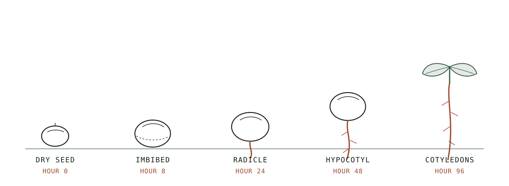

Hub
Sprouting and Microgreens at Home
What germination changes, the safety question most guides skip, and the three ways to run a batch at home.
As an Amazon Associate this site earns from qualifying purchases. Links to products may be affiliate links. This costs you nothing extra and does not change what gets recommended. Nothing here is medical advice.
A dry seed is the cheapest food in your kitchen and the least useful. It sits in a jar for years doing nothing, because doing nothing is its entire job. Dormancy is a survival strategy, and the seed defends it with a chemistry designed to make itself unappealing to eat and hard to digest.
Water changes the seed's mind. Roughly eight hours after the first soak, the machinery switches on, and for the next four days the seed spends its stored capital converting itself into something a young plant can live on. That conversion is the whole point of sprouting. You are not adding anything. You are letting the seed do the work it was always going to do, then eating it at the moment the work is finished and before the plant needs the results.
This page is the map. It covers what germination actually changes, the safety question that most sprouting content skips, the three ways to run a batch at home, and where microgreens branch off into a different project with different rules. Ten detailed guides sit underneath it.

What germination actually changes
A dormant seed stores energy as starch and long-chain proteins, locked behind a hull and paired with compounds that discourage anything from eating it before its time. Phytic acid binds minerals. Enzyme inhibitors slow protein digestion. Neither is dangerous in normal quantities, and both are the reason a raw dry bean is unpleasant and a cooked one is dinner.
Germination dismantles that defensive package from the inside. Enzymes activate and begin breaking starch into simpler sugars, which is why a four-day mung sprout tastes faintly sweet and a raw mung bean tastes like chalk. Stored proteins are cut into free amino acids. Phytic acid levels fall as the seed reclaims the minerals it had bound up for storage. Vitamin C, absent in a dry seed, appears during germination because the growing tissue synthesises it.
Two honest qualifications belong here, and they belong early rather than in a footnote.
The first is magnitude. The direction of these changes is well established across the germination literature. The size of the change is not one number. It moves with the species, the temperature, the duration, the light exposure, and the specific measurement being taken. Any article that gives you a single confident multiplier for a whole category of seed is quoting one study as though it were a law.
The second is that sprouting is not a nutritional transformation so much as a nutritional unlocking. You get better access to what the seed already held. A sprouted lentil is a more available lentil. It is not a different food group, and it will not compensate for the rest of a diet.
The safety conversation belongs first
Most sprouting guides put food safety at the bottom, after the fun part. That ordering is backwards, because the decision that determines your risk is the first one you make, not the last.
Sprouts occupy an unusual position in home food production. The conditions that germinate a seed are close to ideal for bacterial growth: warm, wet, dark, and rich in newly available sugars. Raw sprouts have a documented history of foodborne illness outbreaks in multiple countries, which is why food safety authorities treat them as a higher-risk raw food and publish specific guidance for them. That guidance changes, and it varies by country, so check your own authority's current position rather than trusting any article's summary, including this one.
The critical detail is where contamination comes from. In the outbreaks that have been traced, the pathogen usually arrives on the seed itself, picked up in the field or during storage, long before the seed reaches a kitchen. Germination then multiplies whatever was already present. This has three consequences that shape everything else on this page.
Your seed supplier matters more than your kitchen hygiene. A spotless jar cannot undo a contaminated seed lot. Buy seed sold explicitly for sprouting, from suppliers who describe their pathogen testing, and keep the lot number until the batch is eaten.
Rinsing does not sterilise. Rinsing removes metabolic waste, keeps the mass cool, and prevents the stagnation that causes off smells. It is essential for a good batch and irrelevant as a safety control. Do not let a diligent rinse schedule become a false sense of security.
Cooking does work. Heat is the only reliable kill step available in a home kitchen. Sprouts hold up well in a stir fry, a soup, or a quick blanch. If anyone eating them is pregnant, elderly, very young, or immunocompromised, current guidance in most jurisdictions is that they should have sprouts cooked rather than raw.
None of this means do not sprout. It means the risk is real, it is concentrated at the point of purchase, and it is manageable by people who know where it lives. That is the honest frame, stated once. The rest of this page assumes you have it.
Jar, tray, or machine
Three form factors cover almost every home setup, and the choice is less about quality than about which failure mode you are personally likely to produce.
A wide-mouth jar with a mesh lid is the cheapest entry and the most demanding to run. a complete jar kit with a tilting drain stand covers it in one purchase. It costs very little, it fits in a dish rack, and it produces excellent sprouts. It also relies entirely on you. The jar must sit mouth down at a steep angle so residual water drains instead of pooling at the base, and it must be rinsed on schedule, twice a day at minimum and three times in warm weather. Jars fail when their owner goes away for a weekend. The diagram on this page shows the drainage geometry, because forty degrees is the difference between a clean batch and a sour one.

A tray or stacked tray system trades cost for airflow. Trays hold more, drain across a wider surface, and give the mass room to breathe, which matters once you are sprouting enough to feed a household rather than a sandwich. They also introduce more surfaces to clean, and a neglected tray stack develops problems faster than a neglected jar because the volume is larger.
An automatic sprouter runs the rinse cycle on a timer. This sounds like a luxury and is closer to a correction, because missed rinses are the single most common reason home sprouting stops being a habit. A machine costs real money and consumes counter space permanently. It is worth considering if you have already abandoned a jar once. It is a poor first purchase, because you do not yet know whether you like sprouts enough to want them every week.
The honest recommendation is to start with a jar and a stainless lid, run four batches, and only then decide whether the constraint you hit was cost, volume, or consistency. Each of those points at a different upgrade, and buying before you know which one you have is how equipment ends up in a cupboard.
What to grow first
Mung bean is the beginner's seed for reasons that have nothing to do with tradition. The seed is large enough to handle, cheap enough to waste, fast enough to reward you in three days, and forgiving of a missed rinse in a way that finer seeds are not. A mung sprout also looks like the thing you were trying to grow, which matters more for motivation than anyone admits.
Lentil behaves similarly and tastes greener and more peppery. Green or brown lentils sprout reliably. Red lentils are usually split and hulled, which means they will not sprout at all, and discovering that on your first attempt is a discouraging way to learn it.
Broccoli seed is the one most people arrive for, because broccoli sprouts are widely studied for their glucoraphanin content and the sulforaphane it converts into. The research interest is genuine and ongoing. The seed is also tiny, which makes it less forgiving: it clumps, it holds water, and it needs more attention to drainage than mung does. Come to broccoli second, not first.
Alfalfa is the classic salad sprout and a slower, finer job. It produces a delicate tangle that is lovely in a sandwich and unforgiving of stagnant water. Adzuki, chickpea, and sunflower each have their own quirks, and the guides below cover them individually.
Soak times, and why they differ so much
The initial soak is the only step where the seed is fully submerged, and it is the step most often guessed at. Getting it wrong in either direction costs you the batch before germination has begun.
The soak has one job: to bring the seed's moisture content up past the threshold that triggers germination. A seed with a thick hull and a lot of stored starch needs hours to reach that point. A tiny seed with a permeable coat reaches it quickly and then keeps absorbing water it has no use for, which drowns the embryo and leaves you with a jar of dead seed that smells wrong by day two.
Larger legumes want a long soak. Chickpeas and adzuki sit at the top of the range because they are dense and slow to hydrate. Mung and lentil sit in the middle. Small brassica and salad seeds want a short soak, and some growers skip it entirely for the finest of them, rinsing straight into the drain cycle instead.
| Seed | Soak | Days to harvest | Notes |
|---|---|---|---|
| Chickpea | 10 to 12 hours | 2 to 3 | Sprout short; long sprouts turn starchy |
| Adzuki | 10 to 12 hours | 3 to 5 | Dense, benefits from a rinse mid soak |
| Mung bean | 8 to 12 hours | 3 to 5 | The forgiving default |
| Green lentil | 8 hours | 2 to 3 | Peppery, very fast |
| Sunflower | 6 to 8 hours | 2 to 3 | Hulls must be removed after sprouting |
| Alfalfa | 4 to 6 hours | 4 to 6 | Fine seed, drainage critical |
| Broccoli | 4 to 6 hours | 3 to 5 | Clumps; rinse vigorously |
| Radish | 4 to 6 hours | 3 to 5 | Hot flavour, very reliable |
Water temperature moves these numbers. Cool water slows absorption and a cold kitchen can add hours to every figure above. Warm water speeds it and also gives any bacteria present a head start, so use room temperature water and accept the slower clock. Change the soak water once during the long soaks, since the seed sheds compounds into it that you have no reason to keep.
Where microgreens diverge
Sprouts and microgreens get grouped together and then run on incompatible rules, which produces a lot of failed first attempts.
A sprout is grown in water alone, in the dark or in low light, and eaten whole: seed, root, shoot, and all. The cycle runs three to five days. Nothing is discarded, which is also why nothing can be left behind if something goes wrong.
A microgreen is grown in a medium, soil or a mat, under light, and harvested with scissors above the medium line. The cycle runs seven to twenty-one days depending on the species. The root and seed hull stay behind, which changes the safety profile meaningfully, since the part of the plant in contact with the growing medium is not the part you eat.
That single structural difference drives everything else. Microgreens need light, so they need a window that actually delivers or a modest grow light. They need a medium, so they generate waste and require a tray with drainage. They need more days, so a failed batch costs more time. In exchange they taste considerably better, they keep longer after harvest, and they scale to a windowsill production run in a way that jars do not.
Most people who stay with this end up doing both: jars for volume and speed, trays for flavour and for anything they want to put on a plate deliberately.
Choosing a growing medium
Microgreens need something to stand up in, and the choice affects flavour, cleanliness, cost, and how much of your kitchen ends up covered in dirt.
Potting soil gives the strongest, fastest growth and the best flavour in most side by side comparisons, because it supplies nutrients the seed cannot provide for itself past the first true leaves. It is also the messiest option. Soil clings to stems at harvest, it requires a tray with real drainage, and it turns a countertop into a small garden with all that implies. Use a fine seed starting mix rather than a coarse potting compost, since large bark fragments push seedlings sideways.
Coconut coir is the middle path. It holds water evenly, it is lighter and cleaner than soil, and it comes compressed into bricks that store easily. It carries almost no nutrition of its own, which is fine for a seven day crop living on its seed reserves and limiting for anything you intend to grow past two weeks.
Hemp or jute mats are the cleanest option and the most expensive per tray. They sit flat, they cut with scissors, and they lift out in one piece at the end, which makes cleanup close to trivial. They also dry out faster than either soil or coir, so a mat setup is less tolerant of a missed watering. Growers who run microgreens as a weekly habit tend to migrate toward mats and accept the running cost.
Paper towel works for a first experiment and for almost nothing else. It supports the smallest seeds for a few days, then collapses. Treat it as a way to find out whether you enjoy this, not as a system.
After the harvest
Wet sprouts rot in the refrigerator, and most people who conclude that home sprouts do not keep have simply skipped the drying step.
At the end of the final rinse, drain the batch hard and then dry it properly. Spread it on a clean towel for twenty to thirty minutes, or spin it in a salad spinner in short bursts, which is faster and slightly rougher on delicate varieties. The surface should feel dry to the touch before anything goes into a container. Sprouts stored while still visibly wet begin breaking down within a day.
Store them in a container that breathes rather than one that seals. A jar with a loose lid, or a lidded box with a paper towel folded into the base, both work. A fully airtight container traps the moisture the sprouts continue to release and produces exactly the sour smell you spent four days avoiding.
Handled this way, most sprouts hold for five to seven days in the refrigerator, and that window is one of the real advantages of growing your own. A store bought package has usually spent several days in transit before it reaches the shelf, so the same variety arrives with a fraction of its life remaining.
Microgreens follow the same rule with one addition. Harvest with sharp scissors, cut above the medium line, and do not wash them until you are about to eat them. Washed microgreens keep for a day or two. Unwashed and dry, they hold for a week.
Storing seed between batches
Seed is the one input you buy in bulk, and bulk buying only saves money if the seed is still alive when you reach the bottom of the bag.
Three things degrade sprouting seed: heat, moisture, and light. Heat is the worst of them, which makes the cupboard above the stove the single worst storage location in a typical kitchen and also the most commonly used one. Move seed to the coolest cupboard you have, in an opaque airtight container, away from the hob and out of direct sun.
Viability falls gradually rather than suddenly, and it falls at different rates by species. Larger legumes hold for years under decent conditions. Fine brassica and salad seeds decline faster, and a bag that germinated at ninety percent when you bought it may be at sixty a year later. That decline shows up as a patchy batch with a layer of ungerminated seed at the bottom, which is a hygiene problem as much as a yield problem, since dead seed in a warm wet jar is the thing that spoils first.
Run a germination test on anything older than a year before committing a full batch. Twenty seeds on a damp paper towel, folded into a bag, checked at seventy two hours. Count what opened. Below about seventy percent, use that seed for cooking rather than sprouting and buy fresh.
The five variables that decide a batch
Almost every home sprouting failure traces back to one of five things, and none of them is the seed variety.
Drainage angle. Water that does not leave the vessel becomes the growth medium for whatever was on the seed. Steep and consistent beats gentle and occasional.
Rinse frequency. Twice daily is the floor. Three times is correct above about twenty-four degrees Celsius. The rinse is doing thermal management as much as cleaning, because a dense germinating mass generates its own heat.
Volume. A jar filled more than a third full with finished sprouts has no air in the middle of the mass. Sprouts expand dramatically, and the most common beginner error is starting with far too much seed.
Air. A sealed container is a fermenter. Mesh, cloth, or a perforated lid, always.
Temperature. Room temperature suits nearly everything. Warmer accelerates growth and accelerates spoilage by the same mechanism, which is why summer batches need the extra rinse.
RUN THE NUMBERS
The figures below are illustrative, drawn from typical retail ranges rather than from your local prices, and they are not a promise about your results. Costs vary by region, supplier, and batch size.
| Item | Home sprouting | Store bought |
|---|---|---|
| Starting equipment | Jar and mesh lid, one time | None |
| Seed per batch | About 3 tablespoons dry | Not applicable |
| Yield per batch | Roughly 4 to 6 cups | 1 to 2 cups per package |
| Time to harvest | 3 to 5 days | Immediate |
| Active labour | Under 5 minutes daily | None |
| Shelf life after harvest | 5 to 7 days refrigerated | Often 2 to 4 days remaining |
The economics favour home production once you are eating sprouts weekly rather than occasionally. Below that frequency, the equipment does not pay for itself and the seed goes stale in the cupboard. Be honest with yourself about which of those two people you are before buying anything.
WHAT GOES WRONG
Sour or fermented smell. Almost always drainage. The batch is sitting in its own water. A healthy batch smells faintly green and slightly sweet, and anything sharper is a signal to discard rather than rinse harder.
Fuzzy white growth at the roots. This is usually root hair, which is normal and reappears within hours of a rinse. Mould is different: it is localised, it spreads from a point, and it does not wash away. When you cannot tell the difference, discard the batch. Sprouts are cheap and gastroenteritis is not.
Nothing germinates. Dead seed. Old stock, heat damaged in shipping, or split and hulled, as with red lentils. Test a tablespoon before committing a full batch of unfamiliar seed.
Slimy mass in the centre. Too much seed for the vessel. Halve the starting quantity and the problem disappears.
Bitter microgreens. Usually harvested too late, past the first true leaves. The window is narrower than it looks, and a day matters.
DO THIS NOW
Four actions, this week, in order.
One. Buy seed sold specifically for sprouting rather than repurposing a bag from the grocery aisle, and keep the lot number written on the jar until the batch is eaten.
Two. Set two daily alarms, morning and evening, and leave them running for the full first batch. The habit is the equipment that matters most.
Three. Start with three tablespoons of mung bean in a wide-mouth jar and nothing else. Resist the urge to run three varieties at once on the first attempt.
Four. Check your national food safety authority's current page on raw sprouts and decide, before your first harvest, whether anyone in your household should be eating them cooked.
The ten guides
All ten are live.
The complete four day cycle on the most forgiving seed there is: mung beans start to finish.
The fastest sprout in the cupboard, and the one supermarket variety that will never germinate: lentils and the red lentil trap.
An honest account of the research that brought most people here, plus a growing method for a seed that clumps: broccoli sprouts and what the research actually says.
The finest seed most people attempt, and the mechanical fix for the failure it is famous for: alfalfa without the slime.
Which vessel to buy, decided by which failure you personally produce: jars, trays, and automatic sprouters.
What rinsing actually does, and which steps are protecting you rather than the batch: rinsing and drainage as safety controls.
Viability decay, the twenty seed test, and what the labels do and do not tell you: buying sprouting seed in bulk.
Mats, coir, sowing density, and bottom watering: microgreens without soil.
The one variable no other technique can compensate for: grow lights for a windowsill run.
The ten minutes after cutting that decide whether a tray lasts a week or two days: harvesting and storing microgreens.
Guides in this hub
- Alfalfa Without the SlimeAlfalfa is the finest seed most people attempt and the one that punishes drainage errors hardest. The fix is mechanical rather than mysterious.
- Broccoli Sprouts and What the Research Actually SaysHow to grow broccoli sprouts reliably, and an honest account of the sulforaphane research that brought you here.
- Buying Sprouting Seed in BulkBulk buying only saves money if the seed is still alive at the bottom of the bag, and viability declines faster than most people expect.
- Grow Lights for a Windowsill RunLight is the variable that decides whether microgreens work indoors, and most windowsills that feel bright are not.
- Harvesting and Storing MicrogreensThe ten minutes after cutting decide whether a tray lasts a week or two days, and washing them is the fastest way to waste the work.
- Jars, Trays, and Automatic SproutersWhich sprouting system to buy, decided by which failure you are personally likely to produce rather than by which one is best.
- Lentils and the Red Lentil TrapLentils are the fastest sprout in the cupboard, and one very common variety will never sprout at all.
- Microgreens Without SoilGrowing microgreens on mats and coir instead of potting mix, and the light question that decides whether it works.
- Mung Beans, Start to FinishThe complete four day cycle for mung bean sprouts, including the two mistakes that ruin most first batches.
- Rinsing and Drainage as Safety ControlsWhat rinsing actually does, what it does not do, and which of these steps is protecting you rather than just improving the batch.